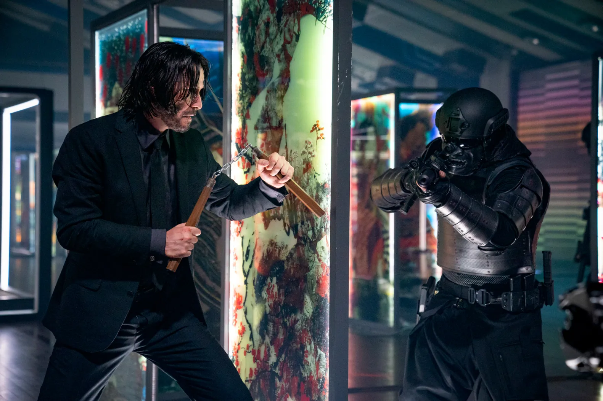
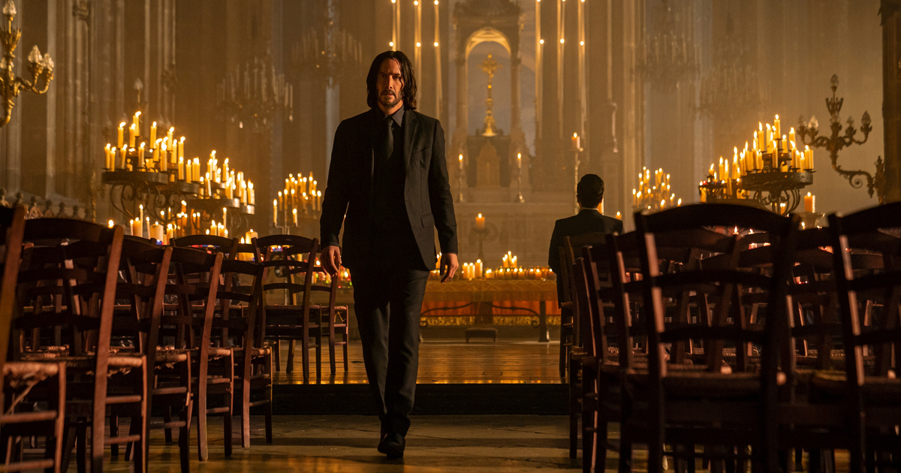

John Wick 4 (2023)
A John Wick: 4. felvonás egy amerikai neo-noir akciófilm, amelyet Chad Stahelski rendezett, Keanu Reeves főszereplésével. A sorozat negyedik része folytatja a legendás bérgyilkos történetét, aki ezúttal is a túlélésért küzd egy kíméletlen világban.

Ez a rész globális színtérre viszi John Wick harcát: Japántól Párizson át Berlinig tart a véráztatta útja. A Magas Asztal szabályai szerint élni vagy meghalni nem csupán személyes kérdés, hanem filozófiai döntés is. A film nemcsak akciót, hanem drámai mélységet is nyújt a karaktereken keresztül.

A koreográfia mestermű: minden jelenet egy aprólékosan megtervezett, vizuálisan lenyűgöző akciószimfónia. Keanu Reeves elképesztő fizikai teljesítményt nyújt, és még mindig saját maga hajtja végre a legtöbb kaszkadőrmutatványt. A film új karaktereket is bemutat, például Caint, a vak bérgyilkost, aki egykori barátként jelenik meg.

A John Wick 4 lezárása katarzist nyújt a nézőnek, de közben nyitva hagyja a lehetőséget a további történetek számára is. A film nemcsak az akciórajongóknak, hanem a mélyebb narratívát keresőknek is élményt kínál. A vizuális stílus, a zenék, és a részletes világépítés különösen erőssé teszi ezt az epizódot.